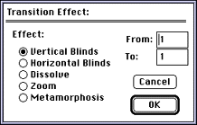

- From the Anim menu, choose Clear > All Frames.
- From the Anim menu, choose Set # Of Frames and enter 8 in the dialog
that appears.
- Double-click the Text tool, select a 48-point font and choose OK.
If you don't have a 48-point font, use the largest one you have.
- Click in the document and type ANIMATION, then click outside the text
box to deselect the text.
- Press Command - 1 to make sure you are on frame 1.
- From the Anim menu, choose Anim Selection, then Anim Effect from the
submenu to display the Transition Effects dialog.
- Click Vertical Blinds and enter 8 (the last frame) in the To box. Make
sure the From box reads 1, then click OK (see Figure 1).
This means you want the selected effect to begin at frame 1 and take
place over all frames.

Figure 1: Transition Effects dialog.
- Press Command - 1 to move back to frame 1 and play the animation.
The picture below shows frame 3 of the animation, with the word
ANIMATION written twice. The blinds have been staggered for more visual
interest.
Figure 2: Animated transition using vertical blinds.